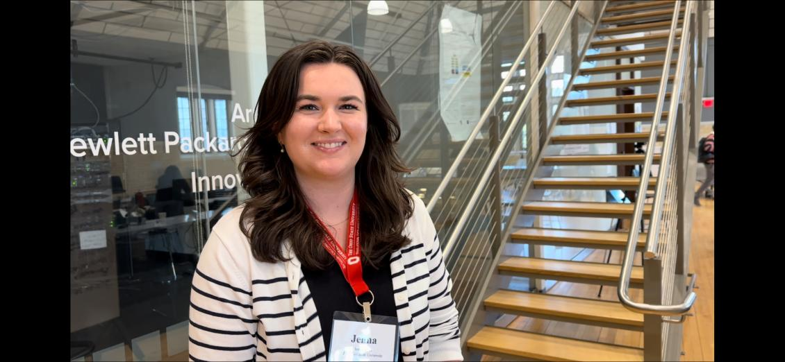

Imageomics Institute's Jenna Kline, a third-year Ph.D. student at The Ohio State University, is making significant strides in wildlife monitoring through her research on coordinated drone swarms.
Her research, "Decentralized Multi-Drone Coordination for Wildlife Video Acquisition," was accepted for presentation at the influential IEEE International Conference on Autonomic Computing and Self-Organizing Systems (ACSOS) 2024, scheduled for September 16-20 in Aarhus, Denmark.
Co-authored by the team of University of Bologna researchers Denys Grushchak, Danilo Pianini, Nicolas Farabegoli, Martina Baiardi, Gianluca Aguzzi, and Ohio State Computer Science and Engineering Professor Christopher Stewart, the paper leverages decentralized algorithms to enhance the efficiency and accuracy of wildlife video gathering. This innovative approach provides invaluable data for ecological studies.
Kline is also presenting her thesis proposal, “Dynamic and Adaptive Autonomous Aerial Systems for Field Animal Ecology Studies,” at the ACSOS PhD Forum.
“Deploying coordinated drones to capture better video data helps scientists understand and protect animal populations more effectively,” she said.
Her initial collaboration with Pianini began at ACSOS 2023 in Toronto and has proven fruitful. The new research project originated from Grushchak's master's thesis, which utilized the Imageomics Institute’s KABR telemetry data to simulate zebra herd movements and optimize drone swarm tracking algorithms.
Kline said the successful research adaptation underscores the potential of combining machine learning and autonomous systems for ecological studies.
The Imageomics Institute research is central to this work. Led by Ohio State CSE Professor Tanya Berger-Wolf, Imageomics is an interdisciplinary field integrating AI, machine learning, ecology, and biology. By applying advanced computational methods to biological image data, researchers can extract and analyze phenotypic traits on an unprecedented scale, accelerating biological discovery and enhancing understanding of biodiversity and ecological dynamics.
ACSOS is a leading forum for sharing research in autonomic computing and self-organizing systems. Now in its fifth year, the conference brings together experts to discuss advancements in self-adaptation, self-organization, and autonomous decision-making systems.
Kline’s participation in ACSOS 2024 underscores the importance of interdisciplinary collaboration and the transformative potential of Imageomics. By merging AI and machine learning with ecological and biological sciences, researchers can achieve a deeper understanding of the natural world, driving innovations that benefit both science and society.